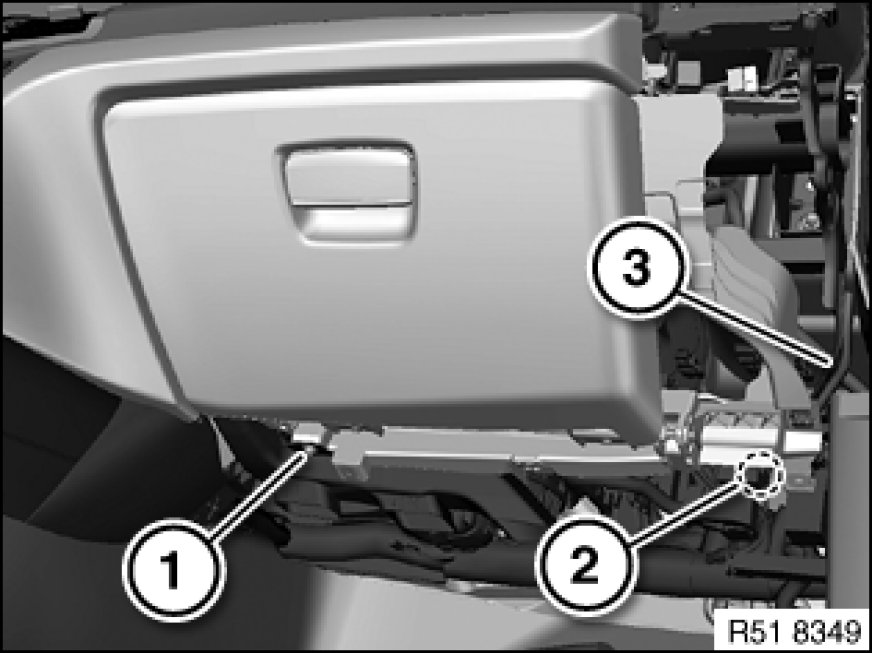
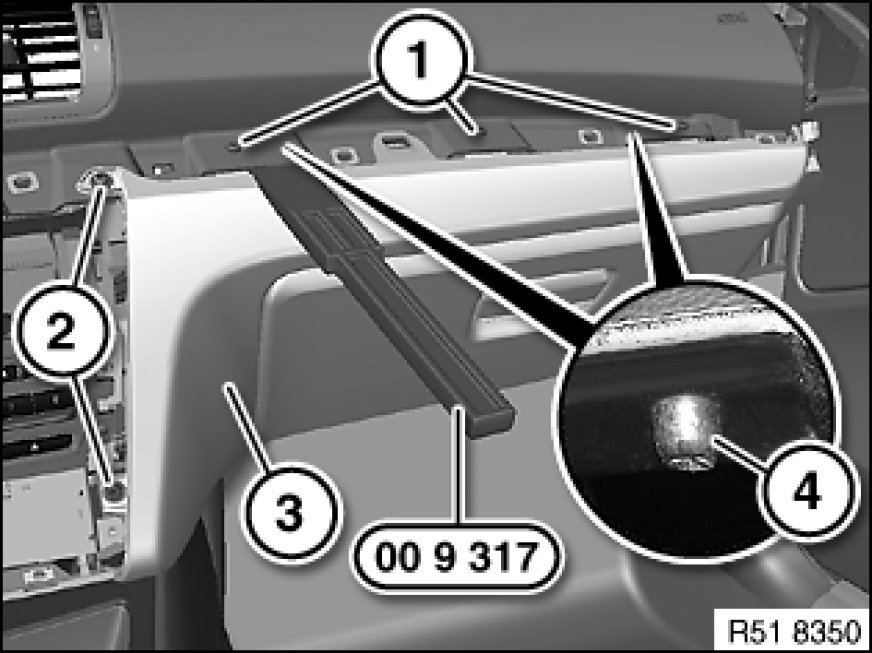

51 16 366 Removing and Installing Right Glovebox With Housing
51 16 366 - Removing and installing right glovebox with housing

Special tools required:

Necessary preliminary tasks:
- Remove trim for instrument panel, bottom left 51 45 181 Removing and Installing/Replacing Bottom Right Trim For Instrument Panel
- Remove decorative strip 51 16 221 Replacing A Clip-Mounted Trim (Decorative Strip on Instrument Panel Trim) on instrument panel trim
- Remove outer trim on glovebox 51 45 275 Removing and Installing (Replacing) Outer Trim on Right Glovebox
- Remove glovebox light
Version with CCC/ASK:
- Release instrument panel trim 51 45 310 Removing and Installing (Replacing) Centre Trim For Instrument Panel (do not remove)
Version without CCC/ASK:
- Release radio receiver 65 11 080 Removing and Installing/Replacing Radio (do not remove)

Note:
CCC - Car Communication Computer
ASK - Audio System Controller
Description is shown on the E82 by way of example. There may be differences in detail in the case of other models.

Release screw (1).
Release screw (2) on holder (3).

Release screws (1 and 2).
Raise guides (4) of instrument panel with special tool 00 9 317 and pull out glovebox (3) completely.
If necessary, feed cable out of glovebox (3).